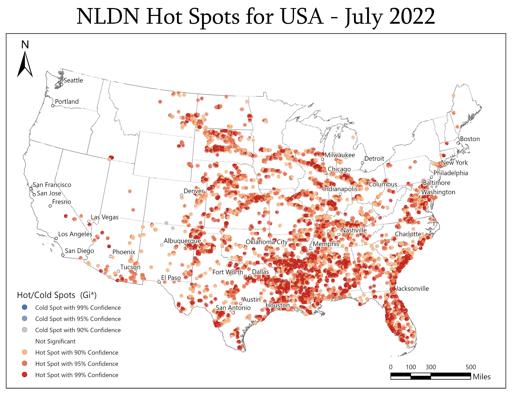
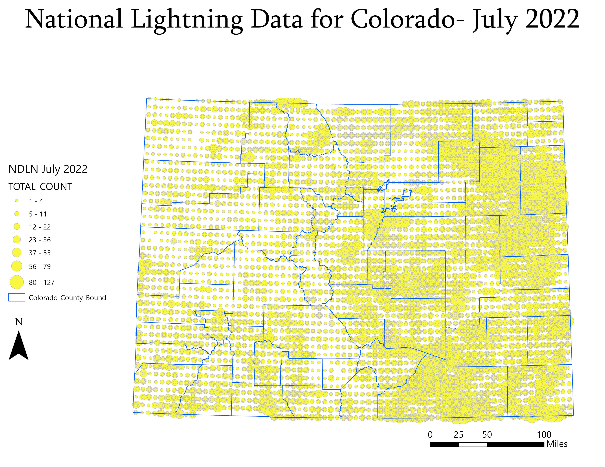
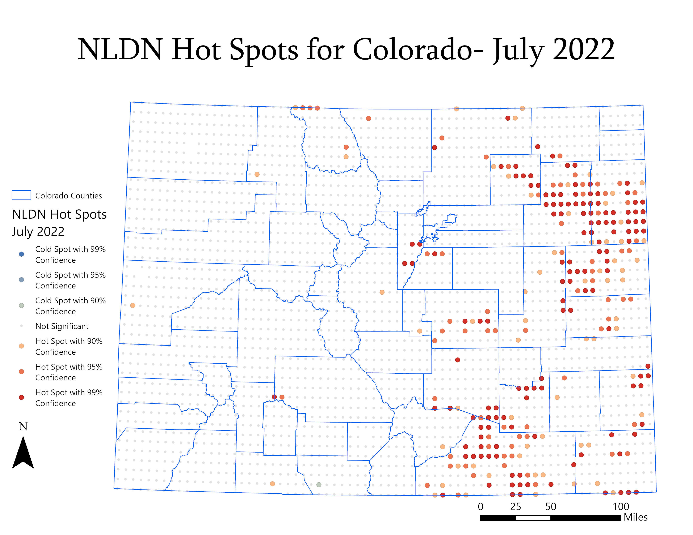

Are cloud-to-ground lightning strikes clustered?
Data from: National Lightning Detection Network
Yes.
Data Analysis: Points are all the same distance from each other as the data is reported as the amount of lightning strikes within the latitude-longitude coordinates for a 10km square. Each point has a value that is the total count of cloud to ground lightning strikes. Cliped data to USA boundaries because lightning in the ocean is not a fire risk. The csv had over 500,000 rows of data
Results show that the incidence of lightning strikes is clustered. The eastern side of the USA has higher incidence of cloud-to-ground lightning strikes. The data did not have any zero values, so the Hot Spot Analysis did not show many cold spots, there was just missing data on the west coast. To correct this, I will add rows to the dataset to include the zero values so the calculations can predict the cold spots. I was surprised that the southern rocky mountain region didn’t have more lightning strikes.
Focusing on Colorado
Using this information, you could compare the hot spot lightning strike data to low values of NDVI and predict where a lightning caused wildfire would be likely to occur.
 Data Sources:
- Lightning strike tiles: NOAA Data
- State Outlines: esri ArcGIS dataset
- Major Cities: esri ArcGIS dataset